design-ref-finder · 11 sites
DESIGN
REFERENCE
HUB
바이브코딩으로 웹페이지나 프로그램 화면을 만들기 전에, 참고할 디자인을 찾는 사이트 11곳을 한 화면에 모았습니다.
사이트 보러 가기 ↓색·사진·분위기 이미지를 모아 무드보드를 만들기. 검색어 예: web design, dashboard ui.
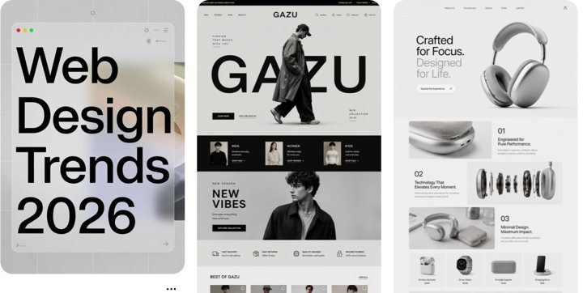
무엇을 만드나요?
고르면 맞는 사이트만 또렷하게 보여요.
Spline Community
첫 화면에 넣을 3D·인터랙티브 장면을 찾는 곳. 마음에 들면 Remix로 내 작업 공간에 복사해 고칠 수 있어요.
이 페이지의 기준 레퍼런스: Bento 3D (krisxsee)
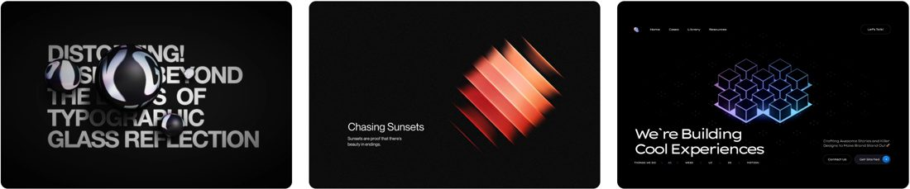
Mobbin
실제 서비스의 화면과 가입·결제 흐름을 그대로 볼 수 있는 화면 모음.
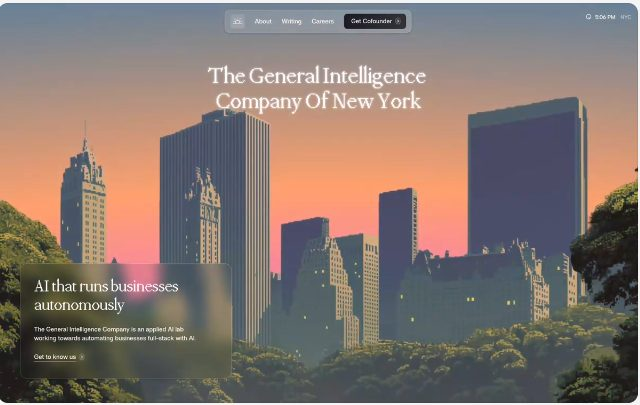
Dribbble
버튼·카드·화면 전환 같은 움직임 아이디어를 빠르게 훑어보기.
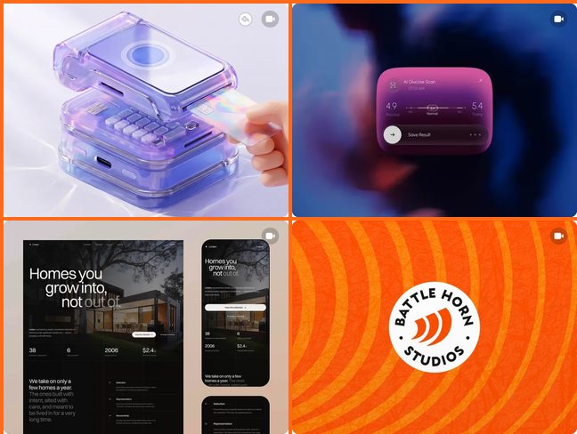
SiteInspire
개성 있는 실제 웹사이트를 스타일·분야별로 고르기.
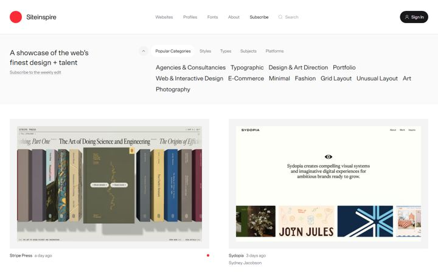
21st.dev
히어로·벤토·가격표·대시보드처럼 바이브코딩에 바로 붙여 쓰는 React 부품 1만 2천여 개.
예:
/community/components/s/bento 벤토 컴포넌트 86개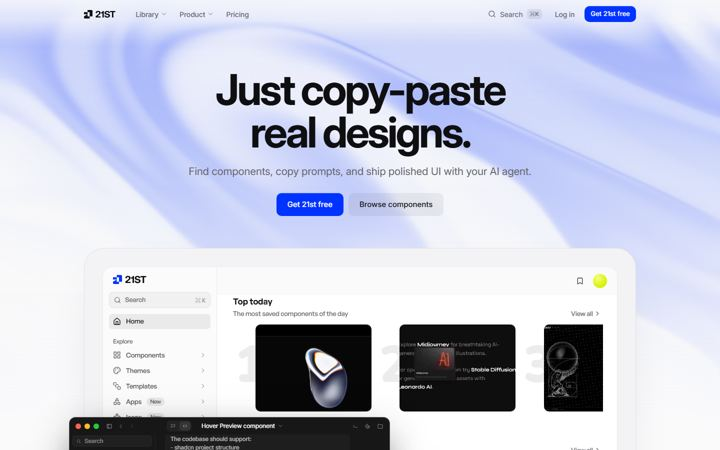
getdesign.md
실제 브랜드의 색·서체·간격을 정리한 DESIGN.md를 AI에게 그대로 넘기기.
npx getdesign@latest add linear.app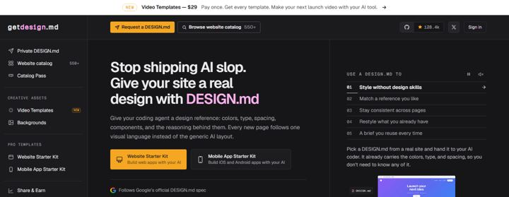
Awwwards
올해의 사이트(SOTY) 수상작으로 완성도의 기준 잡기.
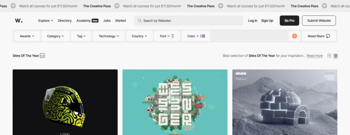
footer.design
잘 만든 푸터 776개를 스타일·업종별로.
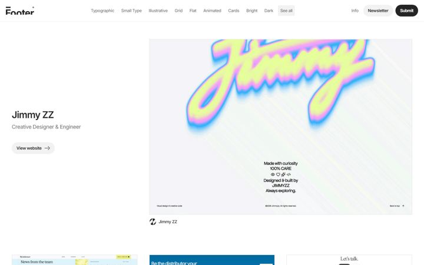
cta.gallery
신청 폼·뉴스레터·버튼 같은 행동 유도 디자인 523개.
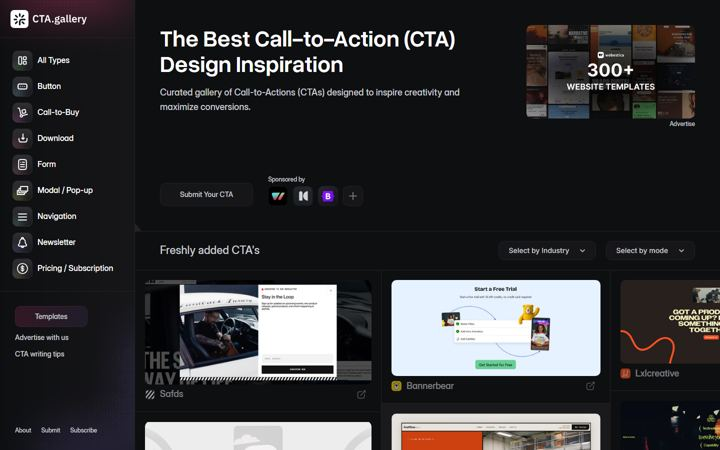
Refero Styles
실제 제품 사이트의 색표·서체·디자인 토큰을 브랜드 이름으로 찾기.
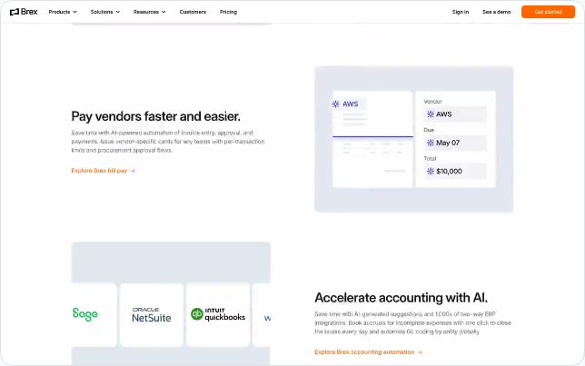
이렇게 써요
- 01무엇을 만들지, 누가 쓸지 정하기
- 02디자인 방식 2~4개와 레퍼런스 고르기
- 03추천 보드에서 마음에 드는 방식 선택
- 04디자인 브리프로 바이브코딩 시작